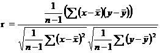
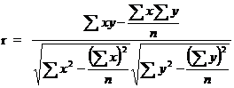
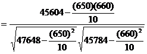

STAM101 :: Lecture 12 :: Correlation – definition – Scatter diagram -Pearson’s correlation co-efficient – properties of correlation coefficient

Correlation
Correlation is the study of relationship between two or more variables. Whenever we conduct any experiment we gather information on more related variables. When there are two related variables their joint distribution is known as bivariate normal distribution and if there are more than two variables their joint distribution is known as multivariate normal distribution.
In case of bi-variate or multivariate normal distribution, we are interested in discovering and measuring the magnitude and direction of relationship between 2 or more variables. For this we use the tool known as correlation.
Suppose we have two continuous variables X and Y and if the change in X affects Y, the variables are said to be correlated. In other words, the systematic relationship between the variables is termed as correlation. When only 2 variables are involved the correlation is known as simple correlation and when more than 2 variables are involved the correlation is known as multiple correlation. When the variables move in the same direction, these variables are said to be correlated positively and if they move in the opposite direction they are said to be negatively correlated.
Scatter Diagram
To investigate whether there is any relation between the variables X and Y we use scatter diagram. Let (x1,y1), (x2,y2)….(xn,yn) be n pairs of observations. If the variables X and Y are plotted along the X-axis and Y-axis respectively in the x-y plane of a graph sheet the resultant diagram of dots is known as scatter diagram. From the scatter diagram we can say whether there is any correlation between x and y and whether it is positive or negative or the correlation is linear or curvilinear.
Positive Correlation Negative correlation
Curvilinear no correlation
(or) non linear
Pearsons Correlation coefficient
The measures of the degree of relationship between two continuous variables is called correlation coefficient. It is denoted by r.( in case of sample )and r (in case of population). The correlation coefficient r is known as Pearson’s correlation coefficient as it was discovered by Karl Pearson. It is also called as product moment correlation.
The correlation coefficient r is given as the ratio of covariance of the variables X and Y to the product of the standard deviation of X and Y.
Symbolically,

which can be simplified as

This correlation coefficient r is known as Pearson’s Correlation coefficient. The numerator is termed as sum of product of X and Y and abbreviated as SP(XY). In the denominator the first term is called sum off squares of X (i.e) SS(X) and second term is called sum of squares of Y (i.e) SS(Y)
\
The denominator in the above formula is always positive. The numerator may be positive or negative making r to be either positive or negative.
Assumptions in correlation analysis:
Correlation coefficient r is used under certain assumptions, they are
- The variables under study are continuous random variables and they are normally distributed
- The relationship between the variables is linear
- Each pair of observations is unconnected with other pair (independent)
Properties
- The correlation coefficient value ranges between –1 and +1.
- The correlation coefficient is not affected by change of origin or scale or both.
- If r > 0 it denotes positive correlation
r< 0 it denotes negative correlation between the two variables x and y.
r = 0 then the two variables x and y are not linearly correlated.(i.e)two
variables are independent.
r = +1 then the correlation is perfect positive
r = -1 then the correlation is perfect negative.
Testing the significance of r
The significance of r can be tested by Student’s t test. The test statistics is given by
This t is distributed as Student’s t distribution with (n-2) degrees of freedom.
The relationship between the variables is interpreted by the square of the correlation coefficient (r2) which is called coefficient of determination. The value 1-r2 is called as coefficient of alienation. If r2 is 0.72, it implies that on the basis of the samples 72% of the variation in one variable is caused by the variation of the other variable. The coefficient of determination is used to compare 2 correlation coefficients.
Problem
Compute Pearsons coefficient of correlation between plant height (cm) and yield (Kgs) as per the data given below:
Plant Height (cm) |
39 |
65 |
62 |
90 |
82 |
75 |
25 |
98 |
36 |
78 |
Yield in Kgs |
47 |
53 |
58 |
86 |
62 |
68 |
60 |
91 |
51 |
84 |
Solution
Ho: The correlation coefficient r is not significant
H1: The correlation coefficient r is significant.
Level of significance 5%
From the data
n = 10


Correlation coefficient is positively correlated.
Test Statistic
ttab=t(10-2, 5%los)=2.306
Inference
t> ttab, we reject null hypothesis.
\The correlation coefficient r is significant. (i.e) there is a relation between plant height and yield.
| Download this lecture as PDF here |